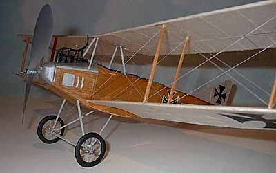
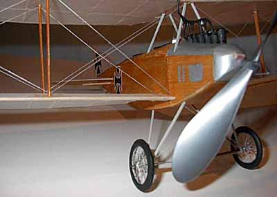
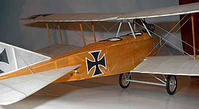

Here are a few pictures of a wonderful Albatros by Sterling Price.
"Plans were from Carlo Godel. Fusealge is white Japenese tissue painted with thin coat of Testors flat brown. It climbs like a rocket, but lands hard. Those were my first try at spoked wheels, and they are all lop-sided." |


Copyright 2001, Thayer Syme. All rights reserved